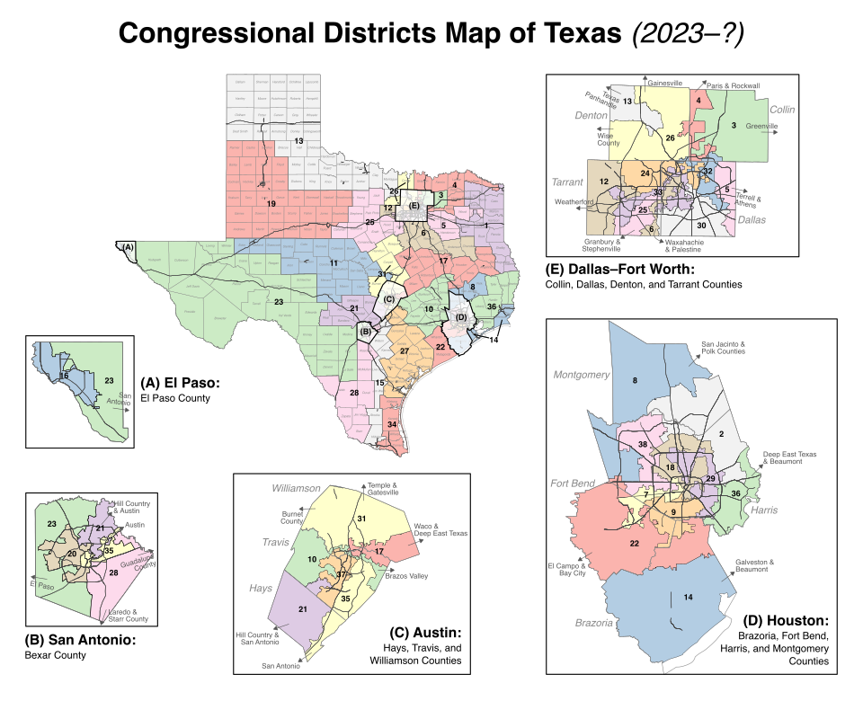

As With-In This:
"Texas CLR-Super-State":
Below Are Listed Details About our
Twelve Politically-Sub-Divided & Individual
"Common-Law Republic Mini-States":
Total Texas Super-State's "Population" Included Here-In: 31,290,831.
Total "US-Civil-Government Representatives-Districts" Included Here-In: 38.
~~~~~~~~~~~~~~~~~~~~~~~~~~~~~~~~~~~~~~~~~~
|
CommonLaw-Republic US-Rep Districts: |
Civil-Government US-Rep Districts: | Population Estimates: |
|---|---|---|
| CLR-D-1, South-East Dallas | 1, 5, & 30 | 2,471,645 |
| CLR-D-2, North-East Dallas | 3, 4, & 32 | 2,471,645 |
| CLR-D-3, North-West Texas | 13, 24, & 26 | 2,471,645 |
| CLR-D-4, West Texas | 12, 19, 25, & 33 | 3,295,527 |
| CLR-D-5, South-West Texas | 16, 20, & 23 | 2,471,645 |
| CLR-D-6, South Dallas | 6, 11, & 31 | 2,471,645 |
| CLR-D-7, South-Central Texas | 21, 28, 35, & 37 | 3,295,527 |
| CLR-D-8, South-Coast Texas | 15, 27, & 34 | 2,471,645 |
| CLR-D-9, South-West Houston | 7, 9, & 22 | 2,471,645 |
| CLR-D-10, Central-East Texas | 8, 10, & 17 | 2,471,645 |
| CLR-D-11, North Houston | 2, 18, & 38 | 2,471,645 |
| CLR-D-12, South-East Texas | 14, 29, & 36 | 2,471,645 |
..... "Essential Principles" of "Common-Law Republicanism", Require, that: All Smaller-Communities, become Organized for "Responsible Self-Governing"; all of which, here-under, Mandate Our Vigilantly Engaging In Regular "Political-Polling Process", "Administering Justice", "Keeping the Peace"; & "Paying All of Our Legitimate Commercial-Debts".
In Pursuit of This "Public Interest", aka: These "Public Purposes", aka: These Essential Organic/Constitutional Purposes, our CLR-Leadership has Re-Assigned the Above Listed 38 US-Civil-Government Representatives-Districts, in-to the Twelve Above-Listed & Individually Sovereign Common-Law Republic Mini-State Districts.

~~~~~~~~~~~~~~~~~~~~~~~~~~~~~~~~~~~~~~~~~~
Civil US-Rep-Districts Reference Guide:
Find Your US-Rep CLR-District, From Your US-Rep Civil-District.
| Civil District | CLR District |
|---|---|
| District 1 | CLR-D-1, South-East Dallas |
| District 2 | CLR-D-11, North Houston |
| District 3 | CLR-D-2, North-East Dallas |
| District 4 | CLR-D-2, North-East Dallas |
| District 5 | CLR-D-1, South-East Dallas |
| District 6 | CLR-D-6, South Dallas |
| District 7 | CLR-D-9, South-West Houston |
| District 8 | CLR-D-10, Central-East Texas |
| District 9 | CLR-D-9, South-West Houston |
| District 10 | CLR-D-10, Central-East Texas |
| District 11 | CLR-D-6, South Dallas |
| District 12 | CLR-D-4, West Texas |
| District 13 | CLR-D-3, North-West Texas |
| District 14 | CLR-D-12, South-East Texas |
| District 15 | CLR-D-8, South-Coast Texas |
| District 16 | CLR-D-5, South-West Texas |
| District 17 | CLR-D-10, Central-East Texas |
| District 18 | CLR-D-11, North Houston |
| District 19 | CLR-D-4, West Texas |
| Civil District | CLR District |
|---|---|
| District 20 | CLR-D-5, South-West Texas |
| District 21 | CLR-D-7, South-Central Texas |
| District 22 | CLR-D-9, South-West Houston |
| District 23 | CLR-D-5, South-West Texas |
| District 24 | CLR-D-3, North-West Texas |
| District 25 | CLR-D-4, West Texas |
| District 26 | CLR-D-3, North-West Texas |
| District 27 | CLR-D-8, South-Coast Texas |
| District 28 | CLR-D-7, South-Central Texas |
| District 29 | CLR-D-12, South-East Texas |
| District 30 | CLR-D-1, South-East Dallas |
| District 31 | CLR-D-6, South Dallas |
| District 32 | CLR-D-2, North-East Dallas |
| District 33 | CLR-D-4, West Texas |
| District 34 | CLR-D-8, South-Coast Texas |
| District 35 | CLR-D-7, South-Central Texas |
| District 36 | CLR-D-12, South-East Texas |
| District 37 | CLR-D-7, South-Central Texas |
| District 38 | CLR-D-11, North Houston |